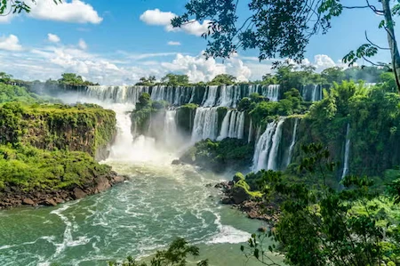
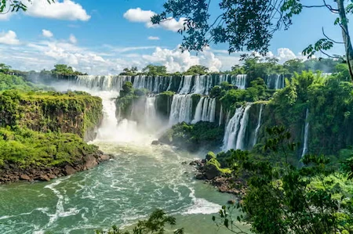
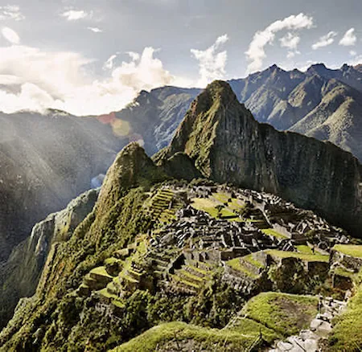
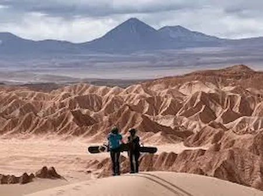

Natural Wonders
Tour the Amazon, admire the Iguazu Falls, or watch the sunset at the 'Salar de Uyuni'. South America is home to some of the most breathtaking landscapes of the planet.
South America is a continent full of contrasts and beauty. From the majestic Andes to the vastness of the Amazon, from surreal deserts to vibrant coasts, each country offers unforgettable experiences for curious travelers
Here, you'll discover South America's most iconic destinations: archaeological sites, natural wonders, cities steeped in history and culture, and landscapes that seem out of this world. Whether you're looking for adventure, nature, or cultural connection, this continent has something just for you.
Tour the Amazon, admire the Iguazu Falls, or watch the sunset at the 'Salar de Uyuni'. South America is home to some of the most breathtaking landscapes of the planet.
From 'Machu Picchu' in Peru to Cartagena in Colombia, the continent boasts a unique cultural heritage, where pre-Columbian civilizations and colonial influences intertwine.
Do you like challenges? Climb to the top of a volcano in Ecuador, bike through the Andes, or sail through the fjords of southern Chile. South America is the ideal destination for adventure lovers.
South America isn't traveled, it's lived.
Learn more about the most fascinating destinations in the southern hemisphere
HERE